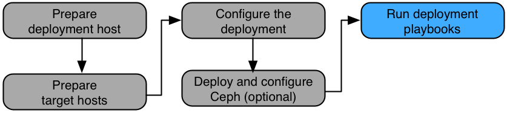

Deployment playbooks#
The rpc-openstack repository contains Rackspace additions for the
upstream OpenStack-Ansible (OSA) project. The deployment
process uses a shell script called deploy.sh to run all of the
playbooks necessary to deploy a typical Rackspace Private Cloud
Powered By OpenStack (RPCO) environment that includes
the following items:
- Ansible, pip, and other tools
- Upstream OSA
- RPCO support tools, which include Holland backup service, SSH key
distribution, custom security group rules, and
bashrcsettings. - Monitoring as a Service (MaaS) which include agents, triggers, and alarms
- Filebeat, Logstash, and Elasticsearch with Kibana
Predeployment tasks#
Before you run the deployment script, perform the following tasks as needed.
- If you are temporarily using HAProxy, use environment variables to enable the HAProxy playbook and disable the automatic deployment of MaaS:
$ export DEPLOY_HAPROXY="yes"
$ export DEPLOY_MAAS="no"
- If you do not need an ELK Stack use environment variables to disable its automatic deployment:
$ export DEPLOY_ELK="no"
Run the RPCO deployment script#
Change to the /opt/rpc-openstack directory and run the deployment script:
$ cd /opt/rpc-openstack
$ scripts/deploy.sh
Postdeployment tasks#
After the deployment script runs, perform the tasks in this section.
Remove HAProxy#
If you were temporarily using HAProxy, perform the following actions to remove it and deploy MaaS:
Verify the deployment of F5 load balancers.
Remove the HAProxy packages and configuration from the target nodes:
$ cd /opt/rpc-openstack/openstack-ansible/playbooks $ ansible infra_hosts -m command -a 'service stop haproxy' $ ansible infra_hosts -m command -a 'apt-get -y remove --purge haproxy' $ ansible infra_hosts -m command -a 'apt-get -y autoremove'
Edit the
openstack_user_config.ymlfile and perform the following actions:- Change the
external_lb_vip_addressandinternal_lb_vip_addressoptions to use the production IP addresses. - Remove the
haproxy_hostssection.
- Change the
Verify that none of the infrastructure nodes contain the load balancer internal virtual IP address:
$ ansible infra_hosts -m shell -a "ip a s br-mgmt"
Verify that none of the network interfaces configuration files on the infrastructure nodes contain the load balancer internal VIP:
$ ansible infra_hosts -m shell -a \ "grep -A12 br-mgmt /etc/network/interfaces"
Verify shutdown of the HAProxy service on the infrastructure nodes:
$ ansible infra_hosts -m shell -a "service haproxy status"
Verify purge of the HAProxy packages on the infrastructure nodes:
$ ansible infra_hosts -m shell -a "dpkg -l | grep haproxy"
Unset the
DEPLOY_HAPROXYandDEPLOY_MAASenvironment variables.Run the MaaS playbooks:
$ cd /opt/rpc-openstack/rpcd/playbooks $ openstack-ansible setup-maas.yml
Configure glance with NFS#
The following procedure describes how to configure an NFS back end to store Image service (glance) images. All steps in this procedure take place on the infrastructure nodes.
Install the
nfs-commonpackage:$ cd /opt/rpc-openstack/openstack-ansible/playbooks $ ansible infra_hosts -m command -a 'apt-get -y install nfs-common'
Create a mount point:
$ ansible infra_hosts -m shell -a 'mkdir /mnt/glance_container_nfs'
Add the NFS mount to the
/etc/fstabfile:$ ansible infra_hosts -m shell -a 'echo X.X.X.X:/MNT \ /mnt/glance_container_nfs nfs \ nfsvers=3,rsize=32768,wsize=32768,actimeo=0,retry=120,hard 0 0 >> \ /etc/fstab'
Mount the file system:
$ ansible infra_hosts -m shell -a 'mount -a'
Verify the mount:
$ ansible infra_hosts -m shell -a 'mount | grep nfs'
Configure the glance containers to mount the file system:
$ ansible infra_hosts -m shell -a 'echo lxc.mount.entry = \ /mnt/glance_container_nfs/ var/lib/glance/images \ none defaults,bind,rw 0 0 >> /var/lib/lxc/$(lxc-ls | \ grep glance_container)/config'
Edit the
/etc/openstack_deploy/user_osa_variables_overrides.ymlfile and configure glance to use thefilestorage back end.Run the glance playbook:
$ cd /opt/rpc-openstack/openstack-ansible/playbooks $ openstack-ansible os-glance-install.yml
Stop and restart the glance containers:
$ ansible infra_hosts -m shell -a 'lxc-stop -n $(lxc-ls | \ grep glance_container)' $ ansible infra_hosts -m shell -a 'lxc-start -d -n $(lxc-ls | \ grep glance_container)'
Perform quality control tests#
After deployment, perform the postdeployment tests documented in the Manual Tests section on the RPCO Support wiki:
These tests verify the following items:
- HAProxy has been removed
- Configuration persists after reboots
- The appropriate version of RPCO is installed
- The OpenStack environment contains the correct components and works correctly
Note
The MaaS QC tests are performed after the monitoring playbooks are deployed. For more information, see Monitoring.
Verify OpenStack operation#
Perform the following tasks to verify basic operation of the OpenStack API and the Dashboard.
Verify the API
The utility container provides a CLI environment for additional configuration and testing.
Determine the utility container name:
$ lxc-ls | grep utility infra1_utility_container-161a4084
Access the utility container:
$ lxc-attach -n infra1_utility_container-161a4084Source the
adminproject credentials:# source openrc
Run an OpenStack command that uses one or more APIs. For example:
# openstack user list +----------------------------------+--------------------+ | ID | Name | +----------------------------------+--------------------+ | 04007b990d9442b59009b98a828aa981 | glance | | 0ccf5f2020ca4820847e109edd46e324 | keystone | | 1dc5f638d4d840c690c23d5ea83c3429 | neutron | | 3073d0fa5ced46f098215d3edb235d00 | cinder | | 5f3839ee1f044eba921a7e8a23bb212d | admin | | 61bc8ee7cc9b4530bb18acb740ee752a | stack_domain_admin | | 77b604b67b79447eac95969aafc81339 | alt_demo | | 85c5bf07393744dbb034fab788d7973f | nova | | a86fc12ade404a838e3b08e1c9db376f | swift | | bbac48963eff4ac79314c42fc3d7f1df | ceilometer | | c3c9858cbaac4db9914e3695b1825e41 | dispersion | | cd85ca889c9e480d8ac458f188f16034 | demo | | efab6dc30c96480b971b3bd5768107ab | heat | +----------------------------------+--------------------+
Verify the dashboard
- With a web browser, access the Dashboard by using the external load
balancer IP address defined by the
external_lb_vip_addressoption in the/etc/openstack_deploy/openstack_user_config.ymlfile. The Dashboard uses HTTPS on port 443. - Authenticate by using the username
adminuser name and the password defined by thekeystone_auth_admin_passwordoption in the/etc/openstack_deploy/user_osa_secrets.ymlfile.
Verify the MaaS
- Run the
verify-maas.ymlplaybook inside the playbooks directory in
rpc-openstack.Important
This is not included in a MaaS install run by default because there is a brief period between the agent restarting with new checks and when the checks are reflected in MaaS.
- Run the